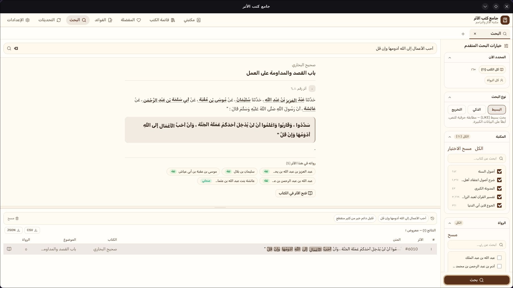
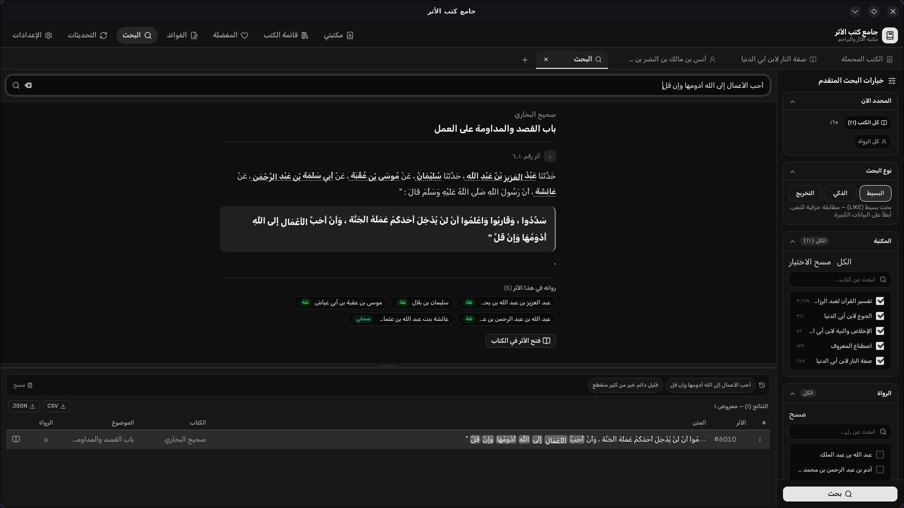
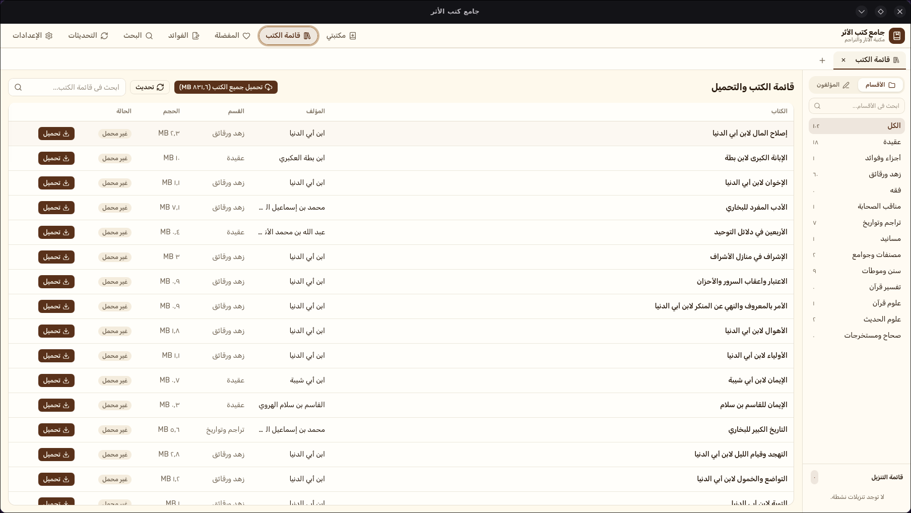
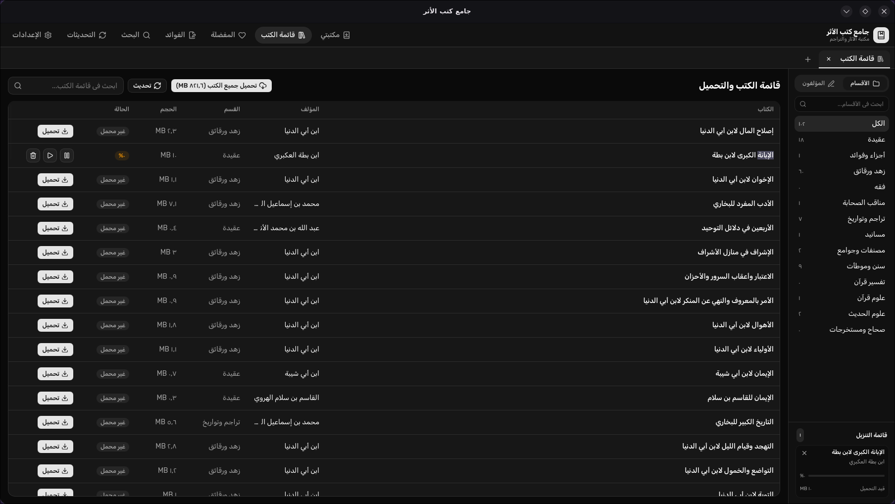
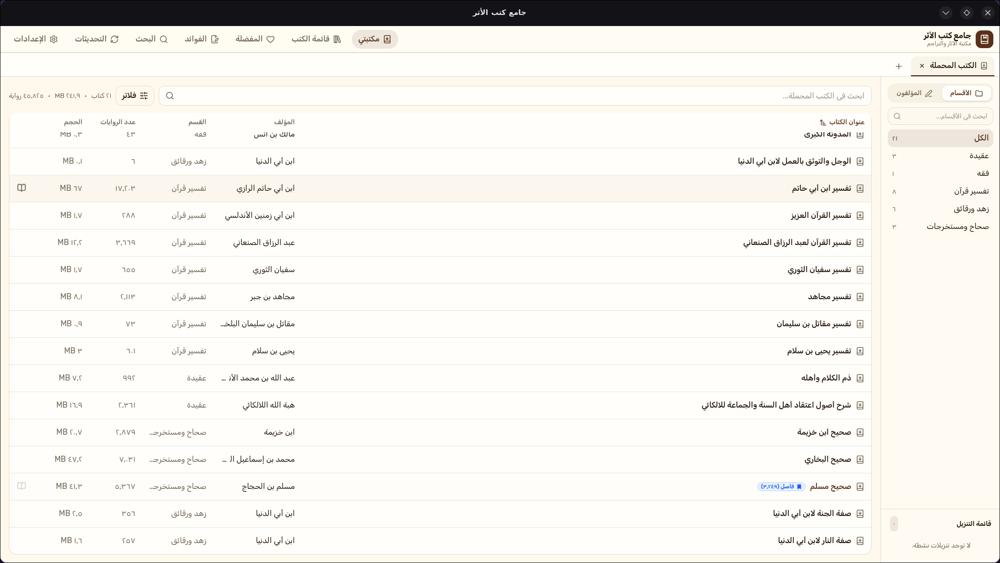
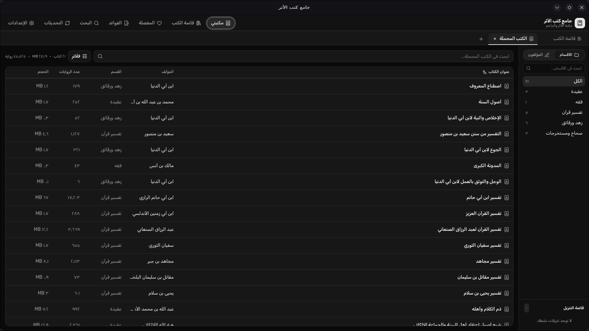
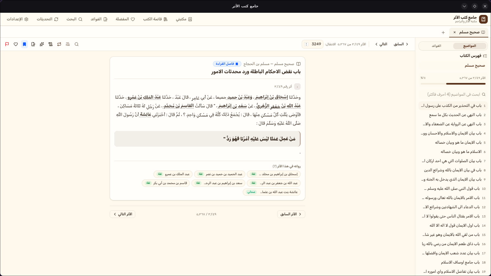
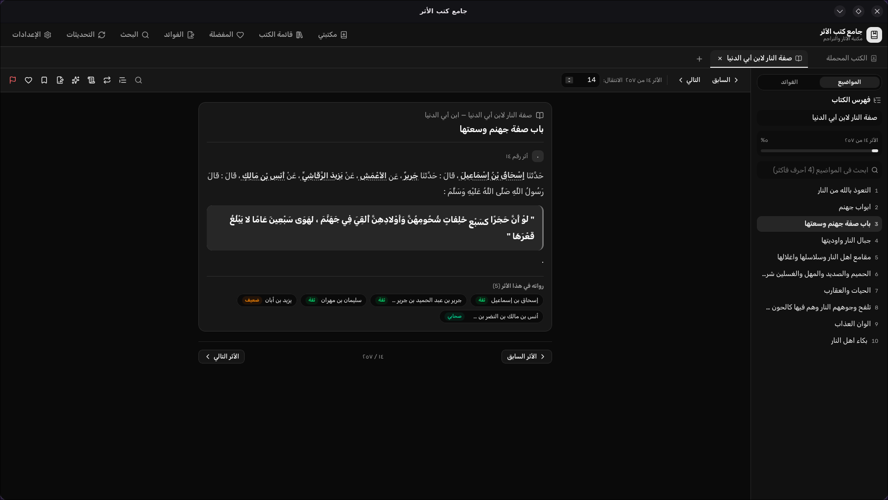
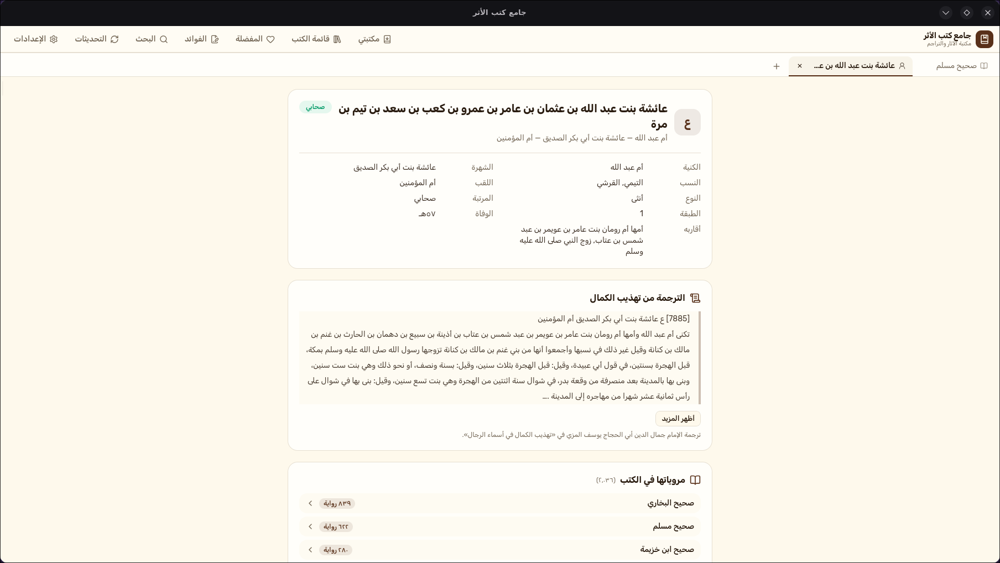
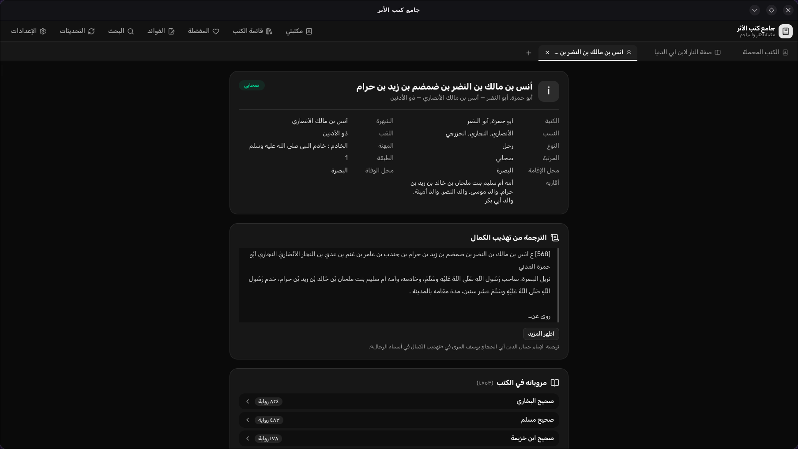

بحث ذكي في المتون والأسانيد
فهارس عربية تتجاهل التشكيل والهمزات، مع تصفية بالكتب والرواة، وسجلٍ محفوظ، وتصدير النتائج.
الإصدار 10/3/1448 هـ
تطبيق سطح مكتب مفتوح المصدر يجمّع كتب الآثار وتراجم الرواة، ببحثٍ ذكي في المتون والأسانيد، وتخريج آلي، وواجهة عربية كاملة.
ويندوز · لينكس · ماك — النسخة الحالية 10/3/1448 هـ


كل ما تحتاجه لقراءة الآثار والتراجم في تطبيق واحد.
فهارس عربية تتجاهل التشكيل والهمزات، مع تصفية بالكتب والرواة، وسجلٍ محفوظ، وتصدير النتائج.
أدخل نص الأثر واعرف مواضعه في كتب السنة الأخرى، مع إشاراتٍ إلى مراتب الرواة.
سير ومراتب الرواة وأقوال الجرح والتعديل، مترابطة مع كل أثر تقرؤه.
حمّل الكتب مرّة واحدة، واقرأها في أي وقت حتى بلا إنترنت.
أثرٌ جديد كل يوم على الشاشة الرئيسية، مع زر تخريج بنقرة واحدة.
اعرض النصوص مشكولة أو بدون تشكيل، واضبط حجم الخط حسب راحتك.
انسخ الأثر مع عزو المصدر ورقم الموضع، أو النص وحده.
افتح أكثر من كتاب وموضع بحث جنبًا إلى جنب، مع سجل للتبويبات المغلقة.
من المكتبة إلى القارئ إلى التراجم — كل ما تحتاجه في شاشات مرتبة.
شاشة ترحيب تُظهر إحصاءات مكتبتك، «أثر اليوم»، وأحدث الكتب المفتوحة.


بحث نصي متقدم في نصوص الكتب المحملة، مع فلاتر وتصدير للنتائج.


تصفح مكتبة الكتب المتاحة، وحمّلها وأدر تحميلاتك من مكان واحد.


إدارة الكتب المحملة على جهازك مع فرز وفلاتر وإحصاءات إجمالية.


قارئ نصوص مسندة كامل: فهرس موضوعات، تنقّل، نسخ، تخريج، وإبلاغ عن الأخطاء.


بطاقة تعريفية شاملة للراوي: صفاته، ترجمته، مروياته، والجرح والتعديل.
يكتشف الموقع نظامك تلقائيًا ويقترح الملف المناسب — أو اختر نسختك من القائمة، وتُحدَّث تلقائيًا مع كل إصدار على GitHub.
لديك ملاحظة أو اقتراح أو مشكلة في التطبيق؟ افتح موضوعًا في صفحة المشكلات وسنناقشها معك.
افتح موضوعًا في GitHub Issues